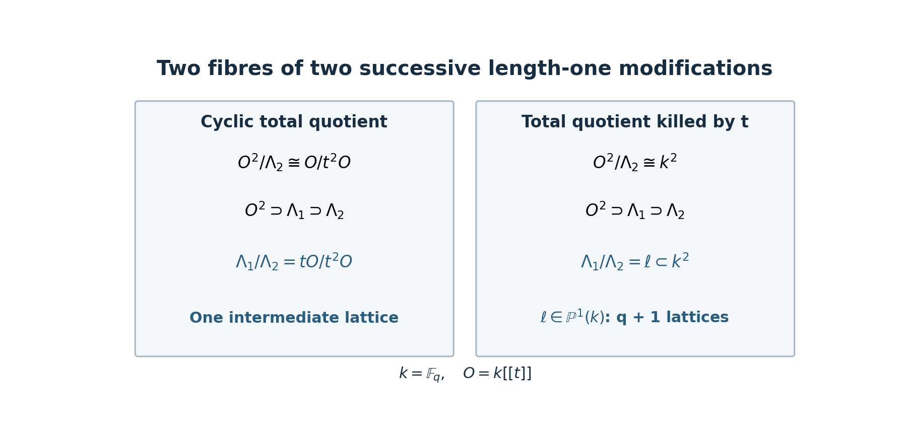

Spherical Hecke algebras as functions on the affine Grassmannian
Written by GPT-6.1 Sol (OpenAI), October 2026. Public domain (CC0).
A Hecke product counts intermediate lattices. A Satake coefficient counts lattices in a prescribed triangular position. These two observations let us see the geometry behind the spherical Hecke algebra before introducing sheaves. We will calculate both counts, including the first example in which an orbit indicator fails to correspond to an irreducible character.
For the algebraic comparison, see The Satake isomorphism for unramified groups and unramified L-factors, Theorem 4.3. We fix its measure convention in §4 and prove the counts and the rank-two injectivity needed here. The earlier lessons Root data and Weyl groups, §§5–6, and Automorphisms, forms and parabolic subgroups, Theorems 2.1 and 7.1, prove the root coordinates, projective flag schemes and flag cells used below. We prove the split-group Cartan decomposition and Iwasawa partition in this lesson, including the uniqueness that makes the orbit indexing complete.
Frenkel's freely accessible lectures, §§5.1–5.4, and Zhu's freely accessible introduction, §§1.2 and 5.6, provide further reading. Semi-infinite orbits and weight functors will give a geometric meaning to the triangular position; intersection complexes will explain the correction to the orbit indicator.
1. A finite calculation that asks for a geometric explanation
Put \(F=\mathbb F_q((t))\), \(O=\mathbb F_q[[t]]\), and \(K=G(O)\), where \(G\) is a split connected reductive group over \(\mathbb F_q\). Choose a split maximal torus \(T\subset B\), with unipotent radical \(N\). Positive roots are the roots in \(\operatorname{Lie}N\), and \(\rho\) is their half-sum. A coweight is a homomorphism \(\mathbb G_m\to T\); write \(a_\nu=\nu(t)\). Dominance means \(\langle\alpha,\lambda\rangle\geq0\) for every positive root \(\alpha\).
Normalize Haar measures by \(\operatorname{vol}(K)=1\) and \(\operatorname{vol}(N(O))=1\). The spherical Hecke algebra \(\mathcal H_G\) consists of compactly supported \(K\)-bi-invariant complex functions on \(G(F)\). Its orbit basis is
\[ c_\lambda=\mathbf1_{K a_\lambda K},\qquad \lambda\in X_*(T)^+. \]
For \(GL_2\), denote \(c_{(1,0)}\) by \(T_1\) and \(c_{(1,1)}\) by \(R\). We will prove
\[ T_1*T_1=c_{(2,0)}+(q+1)R, \qquad S(c_{(2,0)})=q(x_1^2+x_1x_2+x_2^2)-x_1x_2. \]
Thus \(c_{(2,0)}\), even after its leading normalization, has the wrong middle coefficient for the character of \(\operatorname{Sym}^2(\mathbb C^2)\). The corrected function is
\[ h_{(2,0)}=q^{-1}(c_{(2,0)}+R). \]
The added term is supported at the smaller orbit in the same connected component. Later it will come from the intersection complex at the singular point of the orbit closure.
2. Passing from integrals to cosets
For the counts in this lesson, define \(\operatorname{Gr}_G(\mathbb F_q)\) to be the coset set \(G(F)/K\). Its scheme and moduli constructions come in the next two lessons. The following finite-field framing calculation explains why no nontrivial disc torsor adds a point to this coset description. For \(GL_n\), a coset \(gK\) is the lattice \(gO^n\subset F^n\). A lattice is a free \(O\)-module of rank \(n\) spanning \(F^n\). Two matrices give the same lattice exactly when they differ on the right by \(GL_n(O)\).
Lemma 2.A (finite-field frames). A torsor under a connected smooth group \(G/\mathbb F_q\) has an \(\mathbb F_q\)-point. A \(G\)-torsor on \(O=\mathbb F_q[[t]]\) is trivial. Consequently its punctured-disc trivialization is an element of \(G(F)\), determined up to right multiplication by \(G(O)\).
Proof. Work first over \(\overline{\mathbb F}_q\) and write \(\mathrm{Fr}\) for the \(q\)-power Frobenius morphism. For any \(x\in G\), the map \[ h\longmapsto h x\,\mathrm{Fr}(h)^{-1} \] is étale: its differential is an invertible translation of the differential of the first factor, since the differential of \(\mathrm{Fr}\) is zero. Its image is open. These images are the orbits of the twisted action \(h\cdot x=h x\mathrm{Fr}(h)^{-1}\), so they partition the geometric points into open orbits. Connectedness permits only one orbit: otherwise one open orbit and the union of the others would disconnect \(G\). Thus every \(a\in G(\overline{\mathbb F}_q)\) has the form \(b\,\mathrm{Fr}(b)^{-1}\).
For a torsor \(P\), choose a geometric point \(p\), and write \(\mathrm{Fr}(p)=p a\). Choose \(b\) with \(a=b\,\mathrm{Fr}(b)^{-1}\). Then \(p b\) is fixed by Frobenius, and hence is defined over \(\mathbb F_q\). It trivializes \(P\).
Apply this to the special fibre of a torsor on \(O\). Smoothness lifts its point successively through \(O/(t^m)\). On an affine neighbourhood of the initial point these compatible lifts define an \(O\)-point: the coordinate algebra is finitely presented and \(O=\varprojlim_m O/(t^m)\). This point trivializes the torsor. Two integral frames differ by \(G(O)\), proving the quotient identification. \(\square\)
Lemma 2.0 (elementary divisors). Every matrix \(g\in GL_n(F)\) has a factorization
\[ g=k_1\operatorname{diag}(t^{\lambda_1},\ldots,t^{\lambda_n})k_2, \qquad k_1,k_2\in GL_n(O),\quad \lambda_1\geq\cdots\geq\lambda_n. \]
The ordered exponents are unique.
Proof. Multiply \(g\) by a scalar power of \(t\) to make all entries integral. Choose a nonzero entry of least valuation. Move it to the upper left using permutation matrices. Every entry is divisible by this pivot in the discrete valuation ring \(O\), so integral elementary row and column operations clear its column and row. The resulting lower block is invertible over \(F\). Repeat on that block. The new entries remain divisible by the previous pivot, since they were obtained by subtracting integral multiples of entries divisible by it. The diagonal valuations are consequently nondecreasing before we reverse their order. Absorb diagonal units into the integral matrices, and undo the initial scalar multiplication.
For uniqueness, the ideal generated by all \(r\)-rowed minors is unchanged by multiplication by an invertible integral matrix on either side: the Cauchy–Binet expansion gives one inclusion, and multiplication by the inverse gives the other. On the displayed diagonal its valuation is \(\lambda_{n-r+1}+\cdots+\lambda_n\). Successive differences recover every exponent. \(\square\)
Thus the \(GL_n(O)\)-orbits are exactly the ordered tuples in Lemma 2.0. The following proof gives the corresponding statement for every split reductive group.
Theorem 2.C (split Cartan decomposition). For any field \(k\), a split connected reductive group \(G\), \(O=k[[t]]\), and \(K=G(O)\), every element of \(G(k((t)))\) lies in exactly one double coset \(Kt^\lambda K\), with \(\lambda\) dominant.
Proof. We use the ordered root products, big cell, commutator identities and ordinary field Bruhat decomposition proved in Root data and Weyl groups, §§5–6, and the rank-one homomorphisms proved in Roots and reductive groups of rank one, Theorem 7.1. We construct the required affine normal form from these results.
Let \(k\) be any field, \(O=k[[t]]\), \(F=k((t))\), and \(G\) split connected reductive, with pinned \(T\subset B\). Write \(I=\{g\in G(O):g(0)\in B\}\), \(Q^\vee=\mathbb Z\Phi ^\vee\), and \(\widetilde W=X_*(T)\rtimes W\). For a root \(\alpha\) put \(r(\alpha )=0\) if \(\alpha >0\) and \(r(\alpha )=1\) if \(\alpha <0\). The positive real affine roots are \(a=\alpha +n\) with \(n\geq r(\alpha )\); their one-coefficient root groups are \(x_a(c)=u_\alpha (ct^n)\). Torus congruence coefficients have positive degrees \(n\delta\). With these root-parameter conventions, the apartment action of \(n_w=t^\eta n_v\) is \(x\mapsto v x-\eta\). Thus \(w^{-1}(\alpha +n)=v^{-1}\alpha +n-\langle \alpha ,\eta \rangle\), and the reflection in \(\alpha (x)+n=0\) is represented by \(t^{n\alpha^\vee}n_{s_\alpha }\). In particular the coweight label of \(t^\eta\) is \(\eta\) while its apartment translation is \(-\eta\); all root thresholds and alcove signs below use this convention.
Integral big-cell test. For every positive system, the big cell \(U^-TU^+\) is the principal open of a regular function \(\Delta\) whose value in its product coordinates is a nonzero scalar times a torus character. Here is a proof sufficient for the valuative use. Its complement is stable under left \(U^-\), right \(U^+\), and both torus actions. Choose a nonzero regular function vanishing on the complement, and take the finite-dimensional translation module generated by it. Such a module is finite dimensional because comultiplication of a regular function is a finite sum, and a finite coefficient coalgebra contains all its translates. In a finite-dimensional rational representation of a split unipotent group there is a nonzero fixed vector: for \(G_a\), take a highest nonzero coefficient of the polynomial orbit map; translation leaves that coefficient fixed. A central series with additive quotients gives the assertion by induction, using the root-height series of \(U^-\times U^+\). The fixed subspace is torus stable, so choose a nonzero torus eigenvector \(\Delta\) in the complement ideal. On the big cell its two unipotent invariances make it a Laurent polynomial in the torus alone, and its torus eigencharacter makes it a single nonzero Laurent monomial. It therefore vanishes exactly on the complement. Consequently, if an \(O\)-point has generic big-cell coordinates with torus coordinate in \(T(O)\), its \(\Delta\)-value is a unit; the point belongs to the big cell over \(O\), and all its root coordinates are integral. This also holds after any conjugation changing the positive system.
The assertion about a finite-dimensional translation module can be checked directly. If \(\Delta _G(f)=\sum f_j\otimes h_j\), choose the \(h_j\) linearly independent. Coassociativity makes the span \(M\) of the \(f_j\) stable under right translation, and the counit puts \(f\) in \(M\). For a basis \(m_i\) of \(M\), write \(\Delta _G(m_i)=\sum _j m_j\otimes c_{ji}\). Coassociativity gives \(\Delta _G(c_{ji})=\sum _h c_{jh}\otimes c_{hi}\). Thus the finite span \(C\) of these matrix coefficients is stable under both left and right translations; applying the counit to the first factor puts \(f\) in \(C\). Intersect \(C\) with the complement ideal to obtain the finite module for the two unipotents and two tori used above. This ideal is stable under those actions, so the invariant eigenvector still vanishes on the complement. The invariant-vector argument uses polynomial orbit maps and the torus weight decomposition, both defined over \(k\); it does not use density of \(k\)-points or algebraic closedness. If the complement is empty, use \(\Delta =1\).
Intersections of Iwahoris. Representatives \(n_w\) of \(w\in \widetilde W\) lie in \(N_G(T)(F)\), and \(N_G(T)(F)/T(O)=\widetilde W\). If \(w=t^\eta v\), then
\(wIw^{-1}\) has root threshold \(r_w(\alpha )=r(v^{-1}\alpha )+\langle \alpha ,\eta \rangle\).
In the ordinary ordered big-cell coordinates of \(I\), membership in \(I\cap wIw^{-1}\) is precisely the requirement that each root coordinate have valuation at least \(\max(r(\alpha ),r_w(\alpha ))\); every torus arc is allowed. To verify necessity, conjugate those coordinates by \(w^{-1}\). They are big-cell coordinates for the positive system \(v^{-1}\Phi ^+\), with torus coordinate still an integral unit. If the result belongs to \(I\), the integral big-cell test makes all these coordinates integral. Reduction belongs to \(B\) exactly when every coordinate of a negative root for \(B\) vanishes. For this last assertion, order the positive roots of \(B\) by first those negative for the other system and then those positive for it; the earlier ordered-product theorem identifies \(B\) in the other big cell by setting precisely the roots outside \(B\) to zero. These are exactly the displayed valuation requirements. Conversely, these requirements make the conjugated factors integral and their reduction lie in \(B\), proving sufficiency.
This is also a scheme calculation on finite jets: the requirements set specified coefficients to zero in the root product coordinates. Choose a congruence depth larger than all thresholds. Both Iwahori and stabilizer quotients are smooth connected finite-dimensional schemes, and their quotient has dimension
\(d(w)=\sum _{\alpha \in \Phi } \max(0,r_w(\alpha )-r(\alpha ))\).
Equivalently \(d(w)\) counts positive real affine roots \(a\) for which \(w^{-1}a\) is negative: for a fixed \(\alpha\), exactly the integers \(r(\alpha )\leq n<r_w(\alpha )\) contribute. One may construct the quotient coordinates without a quotient theorem. Order these finitely many inversion-root coefficients first, followed by the common-Iwahori coefficients. Each set is closed under addition whenever the sum is a real root. No two inversion roots can sum to a positive imaginary root, since \(w\) fixes \(\delta\) and would turn that sum negative. Reordering with the root commutator formula therefore stays in the respective set. Choose a rational interior point of the fundamental alcove and clear its denominators. This assigns a positive integer height to every positive real affine root and to the positive imaginary degrees; height is additive in commutators. Only finitely many coefficients have bounded height. Opposite-root interchanges use the rank-one Gauss identity with denominator \(1+uv\). Their two positive affine levels have positive sum, so \(uv\in tO\), \(1+uv\) is a unit, and its inverse is the convergent geometric series. The resulting torus factor has positive congruence degree. Constant torus factors are placed last by rescaling root parameters.
At each successive height, swapping two factors changes their coefficients only at larger heights; coefficients of equal root and height add. Thus the change from the original ordered big-cell coordinates to the new order has identity as its leading map at each height. Given the earlier coefficients, the next coefficients are recovered uniquely by subtraction. This constructs a unique inverse recursively, rather than assuming uniqueness of a different order. At every bounded height the coordinate changes and their inverses are polynomial, since only finitely many coefficients contribute. Passing to the inverse limit gives the desired factorization. The bounded-height filtration and the \(t\)-adic filtration are cofinal, since the finite-root contribution to height is bounded. Dividing by the common coefficients leaves exactly the inversion-root coefficients, an affine space of dimension \(d(w)\). Thus the orbit \(In_wI/I\) has this dimension even before any exhaustivity or disjointness assertion.
The affine reflection geometry. In the semisimple real cocharacter space consider the hyperplanes \(\alpha (x)+n=0\). Take the alcove \(A\) adjacent to the origin on the positive-chamber side; equivalently \(0<\alpha (x)<1\) for every positive root. The centre contributes an unrestricted real vector factor. Let \(S\) be the reflections in its walls. The reflection in \(\alpha +n=0\) is \(x\mapsto x-(\alpha (x)+n)\alpha^\vee\). The affine reflection group is \(W_a=Q^\vee\rtimes W\): the product of the parallel reflections at levels zero and one is translation by a coroot, and the zero-level reflections give \(W\). The wall reflections generate it. Indeed, a path between interior points of alcoves crosses finitely many hyperplanes; at each crossing the reflection carrying the current alcove to its neighbour is conjugate to a wall reflection of \(A\). This inductively reaches every alcove. It reaches every affine reflection as well, by reaching either alcove adjacent to its wall.
The action on alcoves is free. If an element of \(W_a\) fixes \(A\), it sends zero to an element \(\eta \in Q^\vee\) in \(\overline A\). Hence \(\eta\) is dominant and \(0\leq \langle \alpha ,\eta \rangle \leq 1\) for every positive root. A dominant coroot-lattice element has nonnegative simple-coroot coefficients: write its positive and negative coefficient parts as \(\eta _+-\eta _-\); distinct simple coroots have nonpositive inner product, so if \(\eta _-\ne 0\), \((\eta ,\eta _-)=(\eta _+,\eta _-)-\Vert \eta _-\Vert ^2<0\), contradicting dominance. Now repeatedly subtract a simple coroot of positive coefficient having positive pairing with the current coweight, until reaching zero. Such a coroot exists because the inner product of the current nonzero positive combination with itself is positive. Every chosen pairing is one: initially all root pairings have absolute value at most one, and subtracting a simple coroot with pairing one is its Weyl reflection, preserving that property and preserving the norm. Reaching zero would therefore force \(\eta =0\). The element fixing \(A\) consequently has zero translation and preserves the positive finite chamber; the finite chamber theorem makes it the identity. This proves freeness.
It follows that \(\widetilde W=W_a\rtimes \Omega\), where \(\Omega\) is the alcove stabilizer; \(\Omega \simeq X_*(T)/Q^\vee\). Representatives of \(\Omega\) normalize \(I\), since they preserve exactly its positive affine root thresholds. The gallery proof of finite Weyl length from the earlier programme applies word for word to this locally finite hyperplane arrangement: a generic segment crosses each separating hyperplane once, and every gallery crosses all of them. Thus \(\ell (w)=d(w)\) is the minimum number of wall crossings for the affine part of \(w\), and multiplying by a wall reflection changes length by one. Reflection permutes all positive affine roots except its own wall root \(a\), which it makes negative. This follows by comparing the signs on the two adjacent alcoves; every other hyperplane has the same sign on them.
One-wall multiplication. For a wall root \(a\), let \(s=s_a\) and \(I_a=I\cap n_s I n_s^{-1}\). The intersection calculation gives both factorizations \(I=I_a x_a(k)=x_a(k)I_a\), because only the one wall-root coefficient is omitted. Also \(n_s I_a n_s^{-1}=I_a\). Put \(D_w=In_wI\). Then
\[ D_sD_w=\begin{cases}D_{sw},&w^{-1}a>0,\\D_{sw}\cup D_w,&w^{-1}a<0.\end{cases} \]
Indeed the factorization reduces the product to the double cosets of \(x_{-a}(c)n_s n_w\), \(c\in k\). If \(w^{-1}a>0\), their root parameter is absorbed on the right of \(n_sn_w\), so every term is \(D_{sw}\). If \(w^{-1}a<0\), the zero parameter gives \(D_{sw}\). For a nonzero parameter, the rank-one identity expresses \(x_{-a}(c)n_s\) as an element of \(I\) times a nonzero \(x_{-a}\) factor; now \(w^{-1}(-a)>0\), so this last factor is absorbed on the right of \(n_w\), giving \(D_w\). For clarity, the nonzero-parameter identity in the root copy of \(SL_2\), with affine powers of \(t\) inserted in the off-diagonal entries, is \[ \begin{pmatrix}1&0\\c&1\end{pmatrix} \begin{pmatrix}0&-1\\1&0\end{pmatrix} = \begin{pmatrix}-c^{-1}&-1\\0&-c\end{pmatrix} \begin{pmatrix}1&0\\-c^{-1}&1\end{pmatrix} \qquad(c\ne0). \] The first factor lies in the positive wall-root group times \(T(O)\), and the second in the negative wall-root group. These determinant-one identities remain valid in every characteristic. Representatives differ only by \(T(O)\), which has no effect on these cosets.
Exhaustivity and disjointness. The earlier field Bruhat theorem generates \(G(F)\) by \(T(F)\) and root groups. Every \(u_\alpha (z)\) is in the group generated by \(I\) and normalizer elements: conjugate it by a sufficiently large power of \(t^{\alpha^\vee}\) to make its parameter satisfy \(r(\alpha )\), using \(\langle \alpha ,\alpha^\vee\rangle =2\). Representatives of the normalizer are products of wall representatives and alcove stabilizers. Repeated one-wall multiplication therefore proves that the \(D_w\) cover \(G(F)\).
They are disjoint. Double cosets, as actual equivalence classes, are either equal or disjoint. Suppose \(D_w=D_v\); their orbit dimensions give \(\ell (w)=\ell (v)\). Induct on this common length. At length zero, both labels lie in \(\Omega\), normalize \(I\), and equality forces their quotient to lie in \(I\cap N(F)=T(O)\), so their labels agree. To justify the normalizer intersection, an integral normalizer point is a unit torus point times a finite Weyl representative; this follows from the ordinary Bruhat cells and their root coordinates. Its reduction lies in \(B\) precisely when its Weyl element is the identity. Thus \(I\cap N(F)=T(O)\). Otherwise choose a left wall descent \(s\) of \(w\). Since \(D_{sw}\subset D_sD_w=D_sD_v\subset D_{sv}\cup D_v\), it equals one of those two double cosets. It cannot equal \(D_v\), since their dimensions differ by one. Hence \(D_{sw}=D_{sv}\); dimensions make \(s\) a descent of \(v\) as well, and induction gives \(sw=sv\), hence \(w=v\). This establishes the affine normal form without importing an affine Bruhat theorem.
Finally \(K=G(O)=\bigcup _{v\in W}D_v\), by reduction and the earlier ordinary Bruhat theorem. One-wall multiplication for the finite simple reflections shows
\(Kn_wK=\bigcup _{x\in WwW}D_x\).
Every product term remains in that finite-Weyl double coset, and conversely its normalizer representative already belongs to \(Kn_wK\). Finite-Weyl double cosets in \(X_*(T)\rtimes W\) are precisely Weyl orbits of coweights, each with its unique dominant representative. Thus
\(G(F)=\coprod _{\lambda \in X_*(T)^+}Kt^\lambda K\).
All arguments used polynomial root identities, integral arc coordinates, and finite affine-root counts, so this proof covers split connected reductive groups in every characteristic, including non-simply-connected groups and central torus factors. \(\square\)
We use the notation
\[ \operatorname{Gr}^{\lambda}(\mathbb F_q)=K a_\lambda K/K. \]
The support of a Hecke function is a finite union of double cosets. Each such orbit has finitely many rational points, so the corresponding function on \(G(F)/K\) has finite support. Conversely a finitely supported, left \(K\)-invariant function on that quotient defines a Hecke function.
Proposition 2.1 (intermediate points). With the convolution convention
\[ (f*g)(x)=\int_{G(F)}f(y)g(y^{-1}x)\,dy, \]
one has
\[ (f*g)(x)=\sum_{yK\in G(F)/K}f(y)g(y^{-1}x). \]
Consequently
\[ c_\lambda*c_\mu=\sum_\nu c_{\lambda\mu}^{\nu}(q)c_\nu, \quad c_{\lambda\mu}^{\nu}(q) =\#\{yK\in\operatorname{Gr}^{\lambda}(\mathbb F_q): y^{-1}a_\nu\in K a_\mu K\}. \]
Proof. The integrand is constant on every right coset \(yK\): replacing \(y\) by \(yk\) leaves \(f(y)\) fixed and changes the argument of \(g\) by left multiplication by \(k^{-1}\). Every right coset has volume one. Compact support makes the displayed sum finite. Evaluate it at \(a_\nu\) and use the bi-invariance of the convolution. This proves the formula for its coefficient in the orbit basis. \(\square\)
An element of the displayed set is an intermediate modification: first from the standard point to \(yK\), then from \(yK\) to \(a_\nu K\). Thus the displayed set is the fibre of the convolution correspondence of coset sets with these two relative positions. Its geometric construction will give the corresponding convolution morphism. The equality of counts here uses only cosets.
3. The size of an orbit
For a positive root \(\alpha\), set \(m_\alpha=\langle\alpha,\lambda\rangle\), and put
\[ d_\lambda=\sum_{\alpha>0}m_\alpha =\langle2\rho,\lambda\rangle, \qquad b_\lambda=\#\{\alpha>0:m_\alpha>0\}. \]
Let \(P_\lambda^-\) be the parabolic generated by \(T\), all negative root groups, and the positive root groups with \(m_\alpha=0\). Its flag variety has dimension \(b_\lambda\). Replacing it by the conjugate opposite parabolic gives the same rational point count.
Theorem 3.1 (orbit count).
\[ \#\operatorname{Gr}^{\lambda}(\mathbb F_q) =q^{d_\lambda-b_\lambda}\#(G/P_\lambda^-)(\mathbb F_q). \]
Proof. The stabilizer of \(a_\lambda K\) in \(K\) is
\[ H_\lambda=K\cap a_\lambda K a_\lambda^{-1}. \]
Reduction modulo \(t\) sends \(H_\lambda\) onto \(P_\lambda^-(\mathbb F_q)\). To see the root conditions, use
\[ a_\lambda u_\alpha(z)a_\lambda^{-1} =u_\alpha(t^{\langle\alpha,\lambda\rangle}z). \]
For a positive root with \(m_\alpha>0\), membership in \(H_\lambda\) requires the root parameter to lie in \(t^{m_\alpha}O\). Negative root parameters have no additional restriction inside \(K\); roots with zero pairing and torus parameters also have none. These conditions also show surjectivity onto the indicated parabolic, using its Levi and root subgroups.
Let \(K_1=\ker(K\to G(\mathbb F_q))\). The reduction map gives a surjection of finite coset sets
\[ K/H_\lambda\longrightarrow G(\mathbb F_q)/P_\lambda^-(\mathbb F_q), \]
whose fibres have size \([K_1:K_1\cap H_\lambda]\). The ordered root decomposition in the big cell is valid on \(K_1\): every element reducing to the identity has unique negative-root, torus, and positive-root coordinates, all reducing to those of the identity. In these coordinates the quotient keeps, for each positive root with \(m_\alpha>0\), the coefficients of \(t,t^2,\ldots,t^{m_\alpha-1}\). There are \(q^{m_\alpha-1}\) choices. All other coordinates cancel. Hence
\[ [K_1:K_1\cap H_\lambda] =\prod_{m_\alpha>0}q^{m_\alpha-1} =q^{d_\lambda-b_\lambda}. \]
The root-coordinate computation can be performed in the finite jet group modulo \(t^M\), for \(M>\max m_\alpha\): the subgroup \(K_M\) lies in \(H_\lambda\), so the two finite root-coordinate counts give the stated index. Finally \(G(\mathbb F_q)/P_\lambda^-(\mathbb F_q)=(G/P_\lambda^-)(\mathbb F_q)\), since each Bruhat cell of this split flag variety has a representative in \(G(\mathbb F_q)\). Multiplying fibre and base counts proves the assertion. \(\square\)
For \(GL_n\), the roots are \(e_i-e_j\), \(i<j\), so
\[ d_\lambda=\sum_{i<j}(\lambda_i-\lambda_j), \qquad b_\lambda=\#\{i<j:\lambda_i>\lambda_j\}. \]
Here the finite flag remembers the filtration on \(\Lambda/t\Lambda\) associated to its distinct elementary-divisor levels; the additional root coefficients remember how the flag lifts through the intervening powers of \(t\). This gives the same count directly with matrices representing lattices.
For \(GL_2\), if \(a>b\), the flag is a line and the additional coordinates number \(a-b-1\). Therefore
\[ \#\operatorname{Gr}^{(a,b)}(\mathbb F_q) =(q+1)q^{a-b-1}. \]
If \(a=b\), the orbit is the single lattice \(t^aO^2\). For \(GL_3\) and \(\lambda=(1,0,0)\), the additional exponent is zero and the flag variety is \(\mathbb P^2\). Its count is \(q^2+q+1\).
4. A triangular position and its measure
Define a semi-infinite orbit on rational points by
\[ S_\nu=N(F)a_\nu K/K. \]
Lemma 4.0 (Iwasawa partition). For every split connected reductive \(G\) over \(k=\mathbb F_q\), \[ G(F)=N(F)T(F)K,\qquad G(F)/K=\coprod_{\nu\in X_*(T)}S_\nu. \]
Proof. The earlier parabolic-group lesson proves that \(G/B\) is projective and that \(G\to G/B\) is a smooth \(B\)-torsor. For \(g\in G(F)\), consider the flag \(g^{-1}B\). Embed \(G/B\) in a projective space over \(k\). Scale its finitely many homogeneous \(F\)-coordinates by a common power of \(t\) so that all lie in \(O\) and at least one is a unit. They define an \(O\)-point of projective space. Every homogeneous equation of \(G/B\) vanishes on it, since it vanishes over \(F\) and \(O\) injects into \(F\). We have therefore extended the flag to an \(O\)-point \(z\).
The reduction \(\bar z\in(G/B)(k)\) lies in one of the flag cells proved in Theorem 7.1 of that earlier lesson. Its root coordinates and Weyl representative give a lift \(h_1\in G(k)\). Pull \(G\to G/B\) back by \(z\). This is a smooth affine \(O\)-scheme with the point \(h_1\) in its special fibre. Smoothness successively lifts that point from \(O/t^m\) to \(O/t^{m+1}\). Concretely, in smooth local coordinates the correction to the defining equations is a linear system with a surjective Jacobian, so it has a solution in the square-zero ideal \(t^mO/t^{m+1}O\). All lifts remain in the same coordinate open, since an element which is a unit modulo \(t\) remains a unit. Affineness and finite presentation identify the compatible solutions with a solution over \(O=\varprojlim_m O/t^mO\). This gives \(h\in K\) lifting \(z\).
Hence \(g^{-1}B=hB\), so \(g=b h^{-1}\) for some \(b\in B(F)\). The earlier root-coordinate proof gives \(B=N\rtimes T\), and a split torus satisfies \[ T(F)=\coprod_{\nu\in X_*(T)}a_\nu T(O) \] by taking the valuations of its coordinates. Absorb \(T(O)\) into \(K\). This proves existence.
For uniqueness, suppose \(na_\nu K=n'a_{\nu'}K\). Then \(a_{\nu'}^{-1}n'^{-1}na_\nu\) lies in \(B(F)\cap G(O)=B(O)\). The equality follows because \(B\) is closed in \(G\): its defining equations hold over \(F\), hence over \(O\). Projection to \(T\) sends this element to \(a_{\nu-\nu'}\in T(O)\); all its character valuations are zero, forcing \(\nu=\nu'\).
For \(GL_n\), one can see the same construction directly from a lattice. Put \(V_i=\operatorname{span}_F(e_1,\ldots,e_i)\). The image of \(\Lambda\cap V_i\) in \(V_i/V_{i-1}\simeq F\) is an ideal \(t^{\nu_i}O\). Choose a lift of its generator; these lifts give an upper triangular lattice basis with diagonal \(t^{\nu_i}\). They identify the unique triangular position without choosing a projective embedding. \(\square\)
Write
\[ \delta(a)=|\det(\operatorname{Ad}(a)|_{\operatorname{Lie}N})|_F, \qquad \delta(a_\nu)=q^{-\langle2\rho,\nu\rangle}. \]
We use the normalized transform
\[ S(f)=\sum_\nu q^{\langle\rho,\nu\rangle} \left(\int_{N(F)}f(na_\nu)\,dn\right)e^\nu. \tag{4.1} \]
Changing variables \(n'=a_\nu n a_\nu^{-1}\) gives \(dn'=\delta(a_\nu)dn\). Thus the coefficient in (4.1) also equals
\[ \delta(a_\nu)^{1/2}\int_{N(F)}f(a_\nu n)\,dn. \]
The order of the two factors matters when converting an integral into a count.
Proposition 4.1 (Satake coefficients).
\[ [e^\nu]S(c_\lambda) =q^{-\langle\rho,\nu\rangle} \#(S_\nu\cap\operatorname{Gr}^{\lambda})(\mathbb F_q). \]
Proof. The stabilizer of \(a_\nu K\) in \(N(F)\) is \(a_\nu N(O)a_\nu^{-1}\). Indeed \(N(F)\cap K=N(O)\), and \(a_\nu\) normalizes \(N\). Its volume is \(\delta(a_\nu)\), by the same change of variables. The map \(n\mapsto na_\nu K\) identifies the intersection in the proposition with the cosets of this stabilizer on which the integrand is one. Every such coset has that volume. Hence the integral in (4.1) is the count multiplied by \(q^{-\langle2\rho,\nu\rangle}\). Multiplication by \(q^{\langle\rho,\nu\rangle}\) proves the result. \(\square\)
In particular the measure of the stabilizer is not one unless \(\langle2\rho,\nu\rangle=0\). Omitting it reverses the normalization of the answer.
5. Explicit lattices in rank two and three
For \(GL_2\), a lattice in \(S_{(r,s)}\) has a unique presentation
\[ \Lambda=O(t^re_1)+O(ze_1+t^se_2), \qquad z\in F/t^rO. \tag{5.1} \]
Its determinant valuation is \(r+s\). When \(\Lambda\subset O^2\), the smaller elementary-divisor exponent is \(\min(r,s,v_t(z))\), with \(v_t(0)=+\infty\): it is the valuation of the ideal generated by the matrix entries. The larger exponent is determined by the determinant. This tests orbit membership without invoking a character formula.
For elementary divisors \((1,0)\), equation (5.1) yields \(q\) lattices for \((r,s)=(1,0)\), with \(z\in O/tO\), and one for \((0,1)\). Since \(\langle\rho,(r,s)\rangle=(r-s)/2\),
\[ S(c_{(1,0)})=q^{1/2}(x_1+x_2). \]
For elementary divisors \((2,0)\), containment in \(O^2\) implies \(r,s\geq0\) and \(r+s=2\). The possibilities are
| Triangular position | Allowed parameter | Count | Normalized coefficient |
|---|---|---|---|
| \((2,0)\) | \(z\in O/t^2O\) | \(q^2\) | \(q\) |
| \((1,1)\) | \(z\in(O/tO)^\times\) | \(q-1\) | \(q-1\) |
| \((0,2)\) | \(z=0\pmod O\) | \(1\) | \(q\) |
Their sum is \(q^2+q=(q+1)q\), as predicted by Theorem 3.1. The missing value \(z=0\) in the middle row gives the central lattice \(tO^2\), whose elementary divisors are \((1,1)\). Thus
\[ \begin{gathered} S(c_{(2,0)})=q(x_1^2+x_2^2)+(q-1)x_1x_2,\\ S(R)=x_1x_2. \end{gathered} \]
The identity \(S(h_{(2,0)})=\chi_{\operatorname{Sym}^2}\) follows. We can prove its uniqueness without using the full Satake isomorphism.
Lemma 5.1 (injectivity in rank two). The transform (4.1) on \(\mathcal H_{GL_2}\) is injective.
Proof. First the elementary-divisor algorithm gives the orbit basis \(c_{(a,b)}\), \(a\geq b\). After multiplying a matrix by a power of \(t\), choose an entry of smallest valuation as pivot and move it to the first diagonal position. Its divisibility into every entry allows invertible row and column operations over \(O\) to clear its column and row. The other diagonal entry is divisible by it; determinant valuation fixes its exponent. Rescale the two unit factors and, if necessary, permute the two basis vectors. This gives the diagonal elementary divisors, uniquely determined by the ideal of matrix entries and the determinant. Undoing the power of \(t\) proves the assertion for every invertible Laurent matrix.
Fix determinant valuation \(d=a+b\). Multiplication of a lattice by \(t^{-b}\) reduces its type to \((m,0)\), \(m=a-b\). The latter lattice is contained in \(O^2\). In presentation (5.1), its triangular positions satisfy \(r,s\geq0\) and \(r+s=m\). After undoing the central translation, the first exponent of every weight in \(S(c_{(a,b)})\) is therefore at most \(a\). At the position \((a,b)\), all \(q^m\) choices of \(z\in O/t^mO\) give smaller elementary divisor zero before translation. Proposition 4.1 gives the nonzero leading coefficient \(q^{m/2}\).
In a nonzero finite linear combination of orbit indicators of determinant \(d\), take the largest \(a\) with nonzero coefficient. The coefficient of \(x_1^ax_2^{d-a}\) in its transform receives a contribution from that orbit and none from the others, so cannot vanish. Different determinant valuations give Laurent monomials of different total degrees and cannot cancel one another. This proves injectivity. \(\square\)
Consequently the counted function \(q^{-1}(c_{(2,0)}+R)\) is the unique function with transform \(\chi_{\operatorname{Sym}^2}\).
To compute \(T_1*T_1\), an intermediate lattice has
\[ O^2\supset\Lambda_1\supset\Lambda_2, \qquad \dim_{\mathbb F_q}(O^2/\Lambda_1) =\dim_{\mathbb F_q}(\Lambda_1/\Lambda_2)=1. \]
The total quotient has length two. If it is cyclic, of type \((2,0)\), its unique length-one submodule gives one intermediate lattice. If it is killed by \(t\), of type \((1,1)\), the intermediate lattices correspond to lines in \(\mathbb F_q^2\), giving \(q+1\). These are all length-two elementary-divisor types. Proposition 2.1 proves the stated product.
For \(GL_3\), lattices in the orbit \((1,0,0)\) satisfy
\[ tO^3\subset\Lambda\subset O^3, \qquad\dim_{\mathbb F_q}(O^3/\Lambda)=1. \]
They are hyperplanes in \(\mathbb F_q^3\), so form \(\mathbb P^2\). Row elimination relative to the standard flag separates them into cells of sizes \(q^2,q,1\). Their triangular positions are \(e_1,e_2,e_3\), respectively. Here \(\rho=(1,0,-1)\), so all three normalized coefficients are \(q\). Therefore
\[ S(c_{(1,0,0)})=q(x_1+x_2+x_3)=q\chi_{\mathrm{std}}. \]
For a split torus, there are no roots and \(N=1\). Every orbit is a point. Hence \(\mathcal H_T=\mathbb C[X_*(T)]\), convolution adds coweights, and \(S\) is the identity. In particular \(\mathcal H_{\mathbb G_m}=\mathbb C[\mathbb Z]\).
6. Exercises with solutions
Exercise 6.1 (easy). Count the \(GL_2\) orbit with elementary divisors \((a,b)\), including \(a=b\).
Solution. Multiplication of every lattice by \(t^{-b}\) reduces to \((m,0)\), \(m=a-b\). For \(m>0\), reduction of its stabilizer preserves a line, giving \(q+1\) choices. The positive-root coordinate retains \(m-1\) coefficients, giving \(q^{m-1}\) choices over each line. The answer is \((q+1)q^{m-1}\). For \(m=0\), the only lattice is \(O^2\), so the answer is one. In particular the formula with \(q^{m-1}\) must not be used at \(m=0\). \(\square\)
Exercise 6.2 (easy). Compute \(S(c_{(1,0)})\) directly and identify the coefficient of each weight.
Solution. In (5.1), the positions \((1,0)\) and \((0,1)\) have \(q\) and one points. Multiply by \(q^{-1/2}\) and \(q^{1/2}\), respectively. Both coefficients become \(q^{1/2}\), giving \(q^{1/2}(x_1+x_2)\), the normalized unramified \(GL_2\) Hecke parameter convention. \(\square\)
Exercise 6.3 (medium). Count the two fibres of the convolution of two length-one lattice modifications.
Solution. For the cyclic quotient \(O/t^2O\), the unique intermediate submodule is \(tO/t^2O\). For the quotient \((O/tO)^2\), intermediate submodules are its one-dimensional subspaces. These yield counts one and \(q+1\), so \(c_{(1,0)}^2=c_{(2,0)}+(q+1)c_{(1,1)}\). There is no other support because total length is two and both modifications are inclusions. \(\square\)
Exercise 6.4 (medium). Identify the three semi-infinite intersections for the \(GL_3\) orbit \((1,0,0)\).
Solution. Write a hyperplane as the kernel of a nonzero covector, up to scalar. Stratify according to the first nonzero entry of its covector. Representatives are \((1,u,v)\), \((0,1,u)\), and \((0,0,1)\), with \(u,v\in\mathbb F_q\). Upper-triangular elimination gives positions \(e_1,e_2,e_3\). Thus the counts are \(q^2,q,1\), with pairings \(\langle\rho,e_i\rangle=1,0,-1\). Multiplying gives \(q,q,q\) and hence \(S(c_{(1,0,0)})=q\chi_{\mathrm{std}}\). \(\square\)
Exercise 6.5 (hard). Determine the function with Satake transform \(\chi_{\operatorname{Sym}^2}\) by counting lattices, and explain why no other answer is possible.
Solution. A determinant-two lattice of type \((2,0)\) has the three presentations in the table of §5. The middle presentation has \(q-1\) possibilities, since a zero parameter raises the smaller elementary divisor to one. Therefore its transform has coefficients \(q,q-1,q\). The central point contributes \(x_1x_2\). Their sum, divided by \(q\), is \(x_1^2+x_1x_2+x_2^2\), so the required function is \(q^{-1}(c_{(2,0)}+c_{(1,1)})\). Any other answer would differ by a function with zero Satake transform, which is zero by Lemma 5.1. \(\square\)
7. From counts to sheaves
The two length-two quotients distinguish a smooth orbit from its singular boundary. A cyclic quotient has a unique intermediate lattice. At the central lattice the quotient is \(k^2\), and the choices form a projective line.

Figure 1. The quotient modules and the fibres counted in Proposition 2.1 and §5. Each intermediate lattice is the inverse image of the displayed submodule. Over \(k=\mathbb F_q\), the two counts are \(1\) and \(q+1\).
Intersection cohomology assigns a complex to the entire orbit closure. Its contribution at the smaller orbit is what the raw orbit indicator misses. The rank-two calculation specifies the function that such a construction must produce: \(q^{-1}(c_{(2,0)}+c_{(1,1)})\). Identifying it with the normalized trace function of an intersection complex is a further theorem, to be proved in Consequences and examples.
The coefficient \(q^{-1}\) also fixes an easily missed convention. In Frenkel's §5.4, the displayed expansion of \(H_\lambda\) says that all full lower coefficients belong to \(\mathbb Z_{\geq0}[q]\). Our count gives a counterexample to that unqualified assertion. Factoring out \(q^{-\langle\rho,\lambda\rangle}\) before discussing the remaining coefficients removes this particular discrepancy.
References
- E. Frenkel, Lectures on the Langlands program and conformal field theory, freely accessible lecture notes (2005), §§5.1–5.4.
- X. Zhu, An introduction to affine Grassmannians and the geometric Satake equivalence, freely accessible lecture notes (2016), §§1.2 and 5.6.
- I. Satake, Theory of spherical functions on reductive algebraic groups over p-adic fields, freely accessible original article, Publications Mathématiques de l'IHÉS 18 (1963), 5–69.